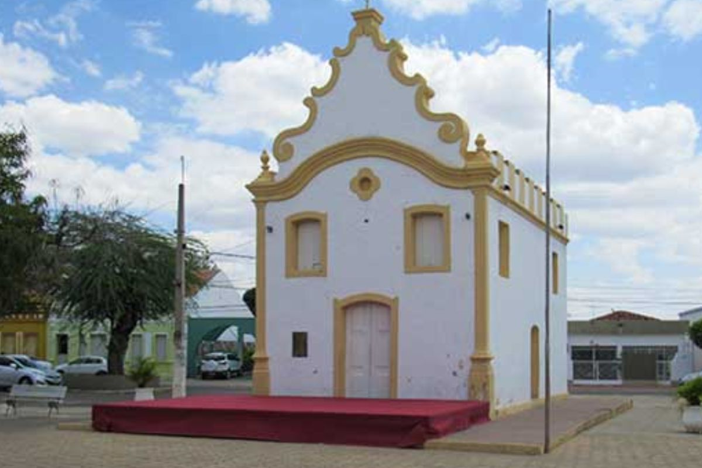
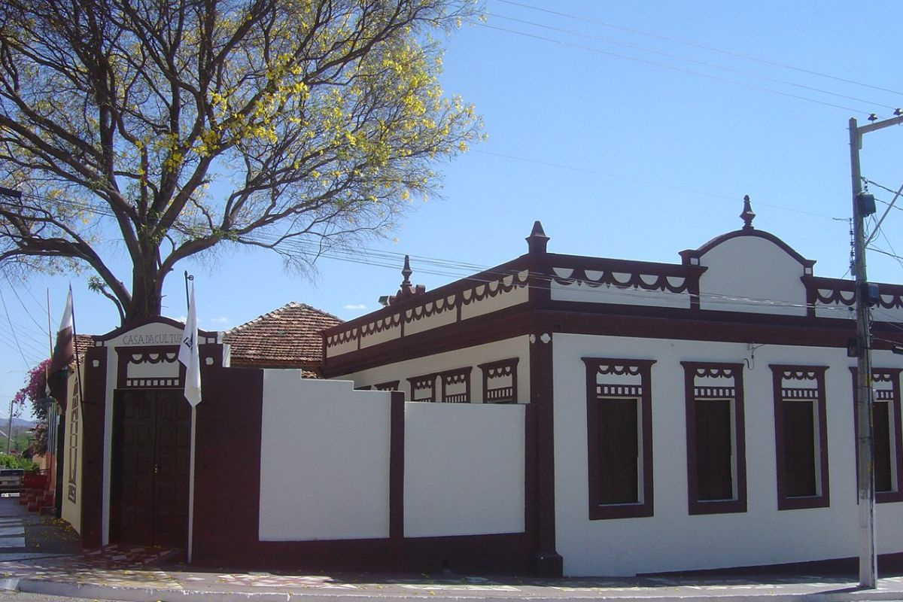
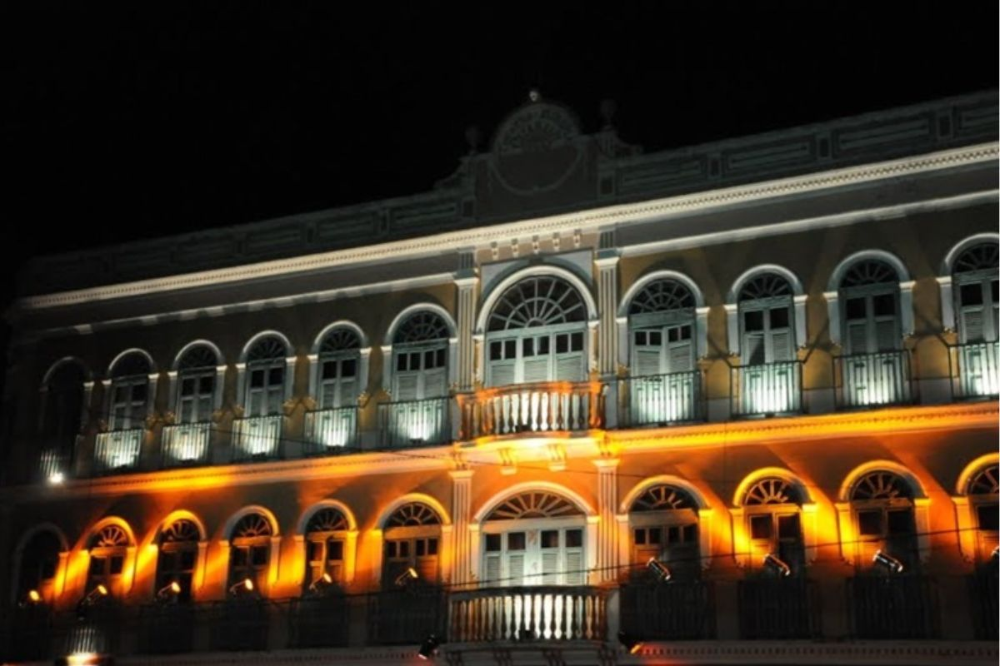
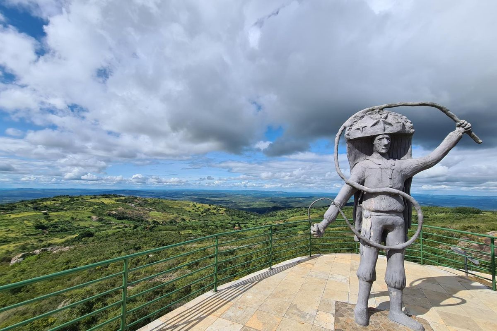
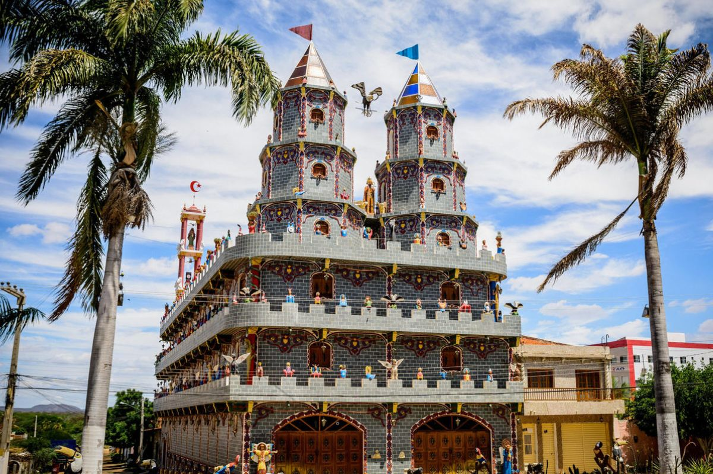
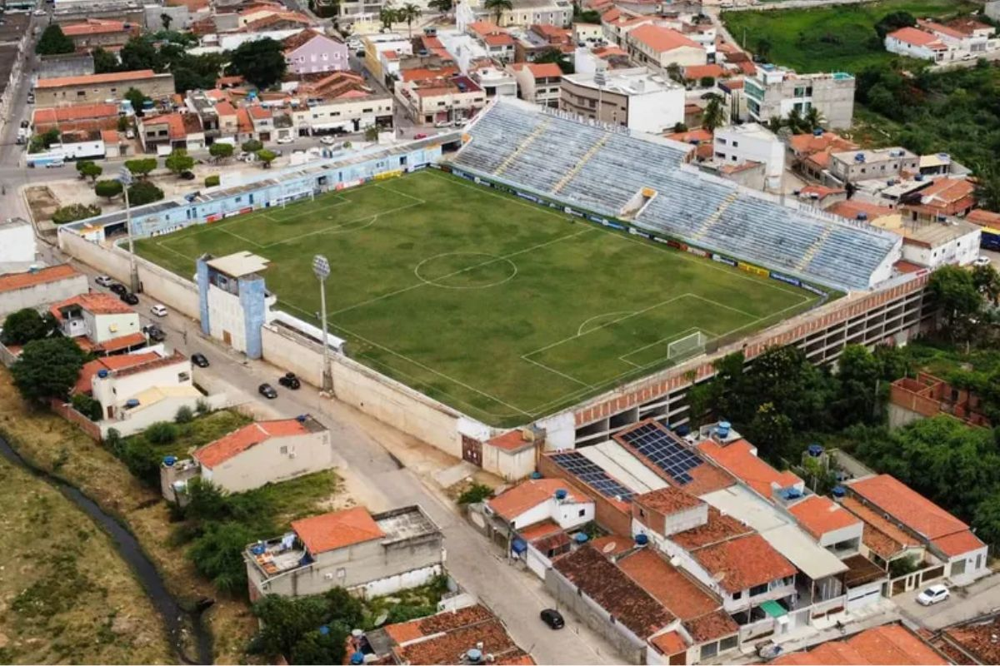

A Serra Talhada
Serra Talhada - Pernambuco
O principal símbolo histórico e cultural da cidade de Serra Talhada.

Igreja do Rosário
Serra Talhada - Pernambuco
Um dos templos religiosos mais tradicionais e históricos da cidade.

Igreja Matriz Nossa Senhora da Penha
Serra Talhada - Pernambuco
Coração religioso e arquitetônico de Serra Talhada.

Museu do Cangaço
Serra Talhada - Pernambuco
O maior acervo sobre o cangaço do Brasil, contando a saga de Lampião.

Casa da Cultura
Serra Talhada - Pernambuco
Preservação da memória e identidade cultural do sertão do Pajeú.

Mirante Serra Talhada
Serra Talhada - Pernambuco
Vista panorâmica espetacular da cidade e do sertão ao redor.

Engenho São Pedro
Triunfo - Pernambuco
Tradição da cachaça artesanal e patrimônio rural histórico.

Igreja Matriz Nossa Senhora das Dores
Triunfo - Pernambuco
Importante patrimônio religioso no alto da Serra da Baixa Verde.

Theatro Cinema Guarany
Triunfo - Pernambuco
Ícone das artes cênicas e do audiovisual no sertão pernambucano.

Pico do Papagaio
Triunfo - Pernambuco
O ponto mais alto de Pernambuco com vista ampla do sertão.

Casa Grande das Almas
Triunfo - Pernambuco
Casarão histórico na divisa de estados com lendas do cangaço.

Pedra do Reino
São José do Belmonte - Pernambuco
Cenário de misticismo e do movimento messiânico sebastianista.

Castelo Armorial
São José do Belmonte - Pernambuco
Museu dedicado à cultura sertaneja e ao Movimento Armorial.

Estádio Cornélio de Barros
Salgueiro - Pernambuco
O Salgueirão, símbolo do futebol e da paixão esportiva no interior.

Rio Pajeú
Sertão do Pajeú - Pernambuco
A artéria vital que banha e inspira a cultura do sertão.